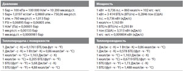
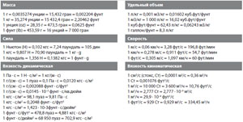
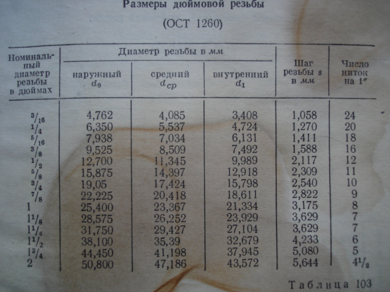
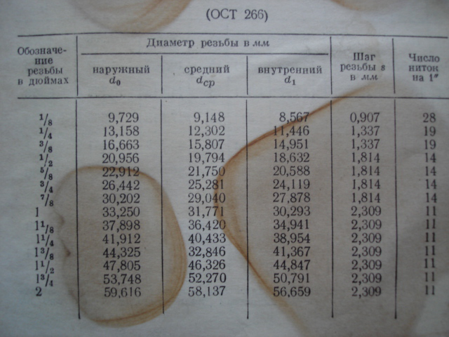

|
Соотношение дюйма и миллиметра. В международной системе единиц один дюйм равен 25.4 миллиметра.
Таблица перевода дюймовых размеров в метрические. Дюймы мм 1 дюйм (inch) = 25,4 мм.
Примечания: Диаметры свыше #14 в дюймах.
Таблица перевода единиц  Параметры дюймовых резьб
Перевод единиц массы, длины, объема и т.д   Таблица перевода диаметров труб из дюймов в мм
Дополнительная информация к дюймовой резьбе Все стандартные шаги указываются в количестве ниток резьбы на дюйм (т.е. на 25.4 мм точно).
Все это в несколько раз сложнее, чем стандарты на метрические резьбы, но все же это вполне конечное множество, не такое уж страшное, когда оно сведено в красивую таблицу. Кстати, сомневаюсь, что где-либо вы найдете это по-русски, ибо в СССР (как я теперь могу ответственно заявить) не было о дюймовых резьбах никакой особо подробной информации. Более-менее освещались в справочниках только трубные резьбы, и то частично, так как советский водогазовый трубный стандарт почти совпадал с британским BSP. Смотрите, как все устроено в американской системе, это неполная таблица, а только по наиболее употребительным диаметрам и типам резьб Расчет объема трубы Определите радиус трубы R. Если необходимо рассчитать внутренний объем трубы, то надо найти внутренний радиус. Если необходимо рассчитать объем, занимаемый трубой, следует рассчитать радиус внешний. Путем измерений можно легко получить диаметр (как внутренний, так и внешний) и длину окружности сечения трубы. Если известен диаметр трубы, поделите его на два. Так, R=D/2, где D — диаметр. Если известна длина окружности сечения трубы, поделите его на 2*Пи, где Пи=3.14159265. Так, R=L/6,28318530, где L — длина окружности. Найдите площадь сечения трубы. Возведите значение радиуса в квадрат и помножьте его на число Пи. Так, S=Пи*R*R, где R — радиус трубы. Площадь сечения будет найдена в той же системе единиц, в которой было взято значение радиуса. Например, если значение радиуса представлено в сантиметрах, то площадь сечения будет вычислена в квадратных сантиметрах. Вычислите объем трубы. Помножьте площадь сечения трубы на нее длину. Объем трубы V=S*L, где S — площадь сечения, а L — длина трубы. Расчет объема воды в трубе и радиаторах
Выбор мощности, тока и сечения проводов и кабелей В таблице сведены данные мощности, тока и сечения кабельно-проводниковых материалов, для расчетов и выбора защитных средств, кабельно-проводниковых материалов и электрооборудования. Медные жилы, проводов и кабелей
Алюминиевые жилы, проводов и кабелей
| |||||||||||||||||||||||||||||||||||||||||||||||||||||||||||||||||||||||||||||||||||||||||||||||||||||||||||||||||||||||||||||||||||||||||||||||||||||||||||||||||||||||||||||||||||||||||||||||||||||||||||||||||||||||||||||||||||||||||||||||||||||||||||||||||||||||||||||||||||||||||||||||||||||||||||||||||||||||||||||||||||||||||||||||||||||||||||||||||||||||||||||||||||||||||||||||||||||||||||||||||||||||||||||||||||||||||||||||||||||||||||||||||||||||||||||||||
+30# yrtchik@ya.ru 22.09.2009 12:06
Полезные таблички, спасибо, только вот как "привязать" диаметры дюймовых резьб к этим самым дюймам. Ну например наружний доаметр резьбы 1/2" не 12,7мм, а 21,5мм. и т.д. От чего такое не соответствие?
Спасибо.
"Ответить" | "Ответить с цитатой" | "Цитировать"
+31# klim 23.04.2011 12:41
ни в коем случае не пытайтесь привязать трубный дюйм к простому дюйму.Это разные вещщи"Ответить" | "Ответить с цитатой" | "Цитировать"
+6# bot 05.05.2012 10:05
В нашей промышленности не применяются дюймовые резьбы. Когда пишут 1/2", имеют в виду условный проход (Ду) трубы, на которой нарезана наружная резьба,а сама резьба называется "трубная цилиндрическая" . При этом наружный диаметр трубы 15мм. А вот в Европе как раз дюймовые резьбы привязаны к геометрическим размерам этой резьбы. Не путать.
"Ответить" | "Ответить с цитатой" | "Цитировать"
+9# 1 06.12.2012 15:42
Наружный диаметр резьбы при этом 20 мм а 15 мм это условный проход трубы."Ответить" | "Ответить с цитатой" | "Цитировать"
+27# КОТОВ АА 01.01.2013 16:02
ДВАДЦАТЬ ЛЕТ НАРЕЗАЮ РЕЗБУ И ВПЕРВЫЕ СЛЫШУ ЧТОБЫ 1/2" ТРУБА ИМЕЛА 15 ММ ДИАМЕТРЕ ВРОДЕ КАК ВЧЕРА РЕЗАЛ ОНА БЫЛА 21ММ ВЧЕРНОВУЮ"Ответить" | "Ответить с цитатой" | "Цитировать"
+1# pitolino 12.03.2013 09:20
Не путайте дюймовую резьбу с трубной."Ответить" | "Ответить с цитатой" | "Цитировать"
-3# мимокрокодил 22.06.2013 09:21
Считается внутренний диаметр трубы, а не внешний."Ответить" | "Ответить с цитатой" | "Цитировать"
+47# Юра 15.08.2013 13:01
обычный дюйм (1") равен 25,4 мм, "трубный дюйм", равен 33,249 мм. Образовался он просто: к размеру (в дюймах), характеризующем у внутренний диаметр трубы, добавили толщину обеих стенок. И получилось, что наружный диаметр дюймовой трубы —-33, 249 мм, полудюймовой — 21, 25 мм.
"Ответить" | "Ответить с цитатой" | "Цитировать"
+7# valentin 12.11.2015 20:34
Стандарты есть СТАНДАРТЫ. Самая простая система - метрическая."Ответить" | "Ответить с цитатой" | "Цитировать"
+4# Егор 08.02.2019 00:35
Самая простая система это та, которая тебе понятна."Ответить" | "Ответить с цитатой" | "Цитировать"
-2# Сергей 01.02.2016 13:14
Если говорить про трубы, то указывается диаметр прохождения трубы, то есть внутренний!"Ответить" | "Ответить с цитатой" | "Цитировать"
0# Володимир 26.07.2019 23:01
Сантехніки так на неї кажуть,по внутрішньому діаметру."Ответить" | "Ответить с цитатой" | "Цитировать"
-4# КОТОВ АА 01.01.2013 16:12
не знаю как в промышленности но по России точно в каждом доме есть дюймовые резбы особенно пол дюйма"Ответить" | "Ответить с цитатой" | "Цитировать"
+6# Тимофей 17.12.2012 12:56
Не забывайте, что дюймовые резьбы есть крепёжные и трубные.кроме того, трудные бывают цилиндрические и конические"Ответить" | "Ответить с цитатой" | "Цитировать"
0# с.п. 08.04.2013 09:15
дюймовая трубная Д20.6(ДУ15)В ЭТОМ РАЗНИЦА С ДЮЙМОВОЙ"Ответить" | "Ответить с цитатой" | "Цитировать"
+16# Жанна 18.01.2010 10:38
:zzz Какой диаметр трубы из нержавейки нужно взять (в мм), если дан выход 2 дюйма"Ответить" | "Ответить с цитатой" | "Цитировать"
-8# Виртуоз 30.04.2011 17:40
50,30"Ответить" | "Ответить с цитатой" | "Цитировать"
+1# Guest 16.01.2015 23:50
50,30
60 шестьдесят !!!
"Ответить" | "Ответить с цитатой" | "Цитировать"
-1# Guest 26.03.2015 13:42
50,30
63мм.
"Ответить" | "Ответить с цитатой" | "Цитировать"
0# АНТОН 20.03.2010 11:21
1 1/2-12 UNS СКОЛЬКО В МЕТРИЧЕСКОЙ"Ответить" | "Ответить с цитатой" | "Цитировать"
-3# Штурмовик62 26.02.2016 09:22
2,117мм"Ответить" | "Ответить с цитатой" | "Цитировать"
-3# Андрей 25.07.2010 21:38
Помогите перевести 1 Джоуль в ватты. Перевод нужен для энергии заряженного конденсатора."Ответить" | "Ответить с цитатой" | "Цитировать"
+4# user 28.07.2010 10:38
Помогите перевести 1 Джоуль в ватты. Перевод нужен для энергии заряженного конденсатора.
в школе физику надо было учить!
"Ответить" | "Ответить с цитатой" | "Цитировать"
+4# юлия 11.07.2011 16:38
Помогите перевести 1 Джоуль в ватты. Перевод нужен для энергии заряженного конденсатора.
1Дж=1Вт*1с
"Ответить" | "Ответить с цитатой" | "Цитировать"
+7# Лом 17.04.2012 13:47
Джоуль - единица энергии. Ватт - единица мощности. Переводить джоуль в ватты так же бессмысленно, как переводить расстояние в скорость."Ответить" | "Ответить с цитатой" | "Цитировать"
-3# Мария 28.08.2010 14:21
Добрый день! помоги с переводом числа на чертеже указано следующее 11474 (37"8")- после 37 стоит одна верхняя запятая далее 8 и две запятые ,чертеж из Германии"Ответить" | "Ответить с цитатой" | "Цитировать"
+2# Александр 11.10.2010 12:55
37 градусов 8 минут (угол)"Ответить" | "Ответить с цитатой" | "Цитировать"
+3# Мотя 20.12.2018 10:04
37 градусов 8 минут (угол)
0 градусов 37 минут 8 секунд. Градусы обозначаются кружочком сверху. Минуты'. Секунды".
"Ответить" | "Ответить с цитатой" | "Цитировать"
+22# Moris 05.11.2010 19:50
В английской типографике штрих — знак фута (а двойной штрих — дюйма): запись 37' 8'' означает 37 футов 8 дюймов. (Wiki-цитата)
В 1 футе 12 дюймов, значит: 37' 8''=25,4х(12х37 +8)=11480,8 мм =11,4808 м.
Если упомянутый чертеж - карта, то это может означать географические координаты точки. Но, уж, никак не в градусах с минутами, а в минутах и секундах, но в координатах обычно принято указывать нулевое значение в градусах, да и сведения о долготе и широте отсутствуют. Так-что это предположение весьма и весьма маловероятно. Разве-что кому-нибудь из "двоечников" пригодится, для общего развития, так сказать.
"Ответить" | "Ответить с цитатой" | "Цитировать"
0# братушка 29.01.2011 11:22
37 с одной запятой это минут
а 8" с двумя запятыми это секунды (в градусном обозначении) не только в Германии а во всём мире.
"Ответить" | "Ответить с цитатой" | "Цитировать"
+1# HMCarsPrj 03.04.2011 15:24
в скобках указывается альтернативный размер
если пред скобками метрический то в скобках имперский, и соответственно на оборот.
минуты и секунды в скобках не пишут!!
"Ответить" | "Ответить с цитатой" | "Цитировать"
+3# Григорий 08.12.2010 15:30
Что за единица объема Нм3 и сколько это литров?"Ответить" | "Ответить с цитатой" | "Цитировать"
0# Катя 31.05.2011 15:48
это нормальный метр кубический(т.е. при нормальных условиях) 1л=10-3м3"Ответить" | "Ответить с цитатой" | "Цитировать"
+4# Александр 10.01.2011 17:24
Сравнивать джоули и бары, это все равно, что метры и килограммы. Джоули- это количество энергии, а бары- это давление."Ответить" | "Ответить с цитатой" | "Цитировать"
+9# Роман 15.01.2011 21:25
Отличная таблица. Иногда голова "кипит" от дюъмов, а тут такая помощь! Спасибо"Ответить" | "Ответить с цитатой" | "Цитировать"
+4# юрий 15.02.2011 15:05
В настоящее время не существует стандарт, регламентирующ ий основные размеры дюймовой резьбы. Ранее существовавший ОСТ НКТП 1260 отменен, и применение дюймовой резьбы в новых разработках не допускается.
Дюймовая резьба применяется при ремонте оборудования, поскольку в эксплуатации находятся детали с дюймовой резьбой. Основные параметры дюймовой резьбы: наружный диаметр, выраженный в дюймах, и число шагов на дюйм длины нарезанной части детали.
"Ответить" | "Ответить с цитатой" | "Цитировать"
0# Артур 21.05.2011 12:10
5-5/8"=142,9мм этот правильный правильный? подскажите пожалуйста!"Ответить" | "Ответить с цитатой" | "Цитировать"
0# Guest 17.09.2012 11:44
ДА"Ответить" | "Ответить с цитатой" | "Цитировать"
+4# semand17 09.06.2011 16:46
Чем отличается Номинал резьбы SAE от UNF"Ответить" | "Ответить с цитатой" | "Цитировать"
+2# Александр 06.09.2011 14:19
есть такое обозначение резьбы: М12 х 1-6g
Что означают цифры 1-6g?
По сути должен быть шаг резьбы... Помогите пожалуйста.
"Ответить" | "Ответить с цитатой" | "Цитировать"
-18# саша 03.11.2011 21:38
М 12 это и есть шаг резьбы,а вот 1-6g?это Обозначение поля допуска диаметра резьбы.А погуглить никак?"Ответить" | "Ответить с цитатой" | "Цитировать"
+20# Евгений 02.01.2012 02:04
12 - диаметр, 1 - шаг, 6g - класс точности"Ответить" | "Ответить с цитатой" | "Цитировать"
-3# Ольга 23.03.2012 12:58
М 12 это и есть шаг резьбы,а вот 1-6g?это Обозначение поля допуска диаметра резьбы.
Вы бы, Александр, не умничали если сами не знаете...
"Ответить" | "Ответить с цитатой" | "Цитировать"
+10# Виктор 11.09.2012 15:42
диаметр М12 с шагом 1 мм, поле допуска 6g"Ответить" | "Ответить с цитатой" | "Цитировать"
0# Дмитрий 06.09.2011 15:10
Подскажите пожалуйста. У меня на трубе наружный диаметр резьбы 16,5 мм. Сколько это будет в дюймах?"Ответить" | "Ответить с цитатой" | "Цитировать"
0# саша 03.11.2011 21:30
3/8"Ответить" | "Ответить с цитатой" | "Цитировать"
+1# Коля 25.10.2011 15:19
50,30
Нужно 50.80 мм !!!
"Ответить" | "Ответить с цитатой" | "Цитировать"
0# Слесарь 04.11.2012 16:53
"Цитирую Виртуоз:"
50,30
Нужно 50.80 мм !!!
Да ты че!?
Внутренний ДУ 2 дюйма = 50 мм
Наружный будет в зависимости от толщины стенок трубы или толстостенная либо тонокостенная.
В итоге по наружке имеет либо 56 - толщина стенок по 3 мм либо 58 мм - толщина стенок 4 или 4, 2 мм
Значится будет = 56,00 мм или 58,00 мм
"Ответить" | "Ответить с цитатой" | "Цитировать"
-1# ефим 07.12.2013 08:26
есть трубы цельнотянутые и сварные. На сварных по всей длине виден стык, на цельно тянутых нет. Просто гладкая труба. Цельнотянутые толще, сварных."Ответить" | "Ответить с цитатой" | "Цитировать"
+1# Юрий 20.11.2011 17:37
резьба 1/4" применяется для крепления всех фотоаппаратов к штативу, поторопились объявлять дюймовую резьбу устаревшей, и где теперь купить метчик и плашку"Ответить" | "Ответить с цитатой" | "Цитировать"
-3# Влад 29.12.2011 19:40
Кто знает какой диаметр прутка под резьбу 1/4"Ответить" | "Ответить с цитатой" | "Цитировать"
+3# Guest 17.09.2012 11:16
D 6,35"Ответить" | "Ответить с цитатой" | "Цитировать"
+1# Игорь 23.02.2013 08:26
если резьба просто дюймовая, то - 6,35 ;
а если резьба дюймовая трубная, то - 13,15
"Ответить" | "Ответить с цитатой" | "Цитировать"
0# Точила 21.03.2014 15:53
В фотоаппаратах крепеж к штативу именно такой 1/4 (умничаю )))"Ответить" | "Ответить с цитатой" | "Цитировать"
-3# Сергей 06.01.2012 07:22
добрый день ,
вопрос, не могу понять
ширина -2" (дюйм) =это понятно 2.5 умножишь на 1
длина -3' =а это как понять,как узнать длину , можете подсказать ?
спасибо
"Ответить" | "Ответить с цитатой" | "Цитировать"
-2# Ильдар 14.01.2012 15:32
длина -3' =а это как понять,как узнать длину , можете подсказать ?
спасибо
длина -3' Это 3 фута (3х12х2,5)
В футе 12 дюймов, в дюйме 2,5 см.
"Ответить" | "Ответить с цитатой" | "Цитировать"
-3# AlexGul 20.02.2012 00:04
Доброго времени суток. Расшифруйте пожалуйста, что за резьба 1М16 (шаг 1,5 мм). Насколько понимаю, это не 5/8 - и диаметр и шаг другой. СПАСИБО
"Ответить" | "Ответить с цитатой" | "Цитировать"
-9# L 28.02.2012 18:52
М16 с шагом М10"Ответить" | "Ответить с цитатой" | "Цитировать"
-2# Виктор 11.09.2012 15:40
Исполнение 1, диаметр М16 с шагом 1.5
если это про гайку...
"Ответить" | "Ответить с цитатой" | "Цитировать"
-2# ЮРИЙ 29.02.2012 22:14
Всем доброе время суток. Подскажите пожалуйста. Есть трубка на ней резьба 12,7 мм. Мерили резьбомером получилось24 нитки на дюйм,что это за резьба? Какая маркировка должна быть на метчике, или плашке? Если такое бывает?"Ответить" | "Ответить с цитатой" | "Цитировать"
-3# александр 17.09.2012 11:11
это обычная дюймовая резьба 1/2"Ответить" | "Ответить с цитатой" | "Цитировать"
-2# андрей 19.11.2015 20:36
....да, это обычная дюймовая, только с мелким шагом. Обычная 1/2 - 13 ниток на дюйм ( американский стандарт), (английский стандарт 12 ниток на дюйм). В американском стандарте самая близкая мелкая резьба 28 ниток на дюйм,.... с английским ещё не познакомился,.. . может по их системе...... А вообще с этими дюймами полная ж......а.
"Ответить" | "Ответить с цитатой" | "Цитировать"
-1# uncommon 20.03.2012 09:48
1 1/4" как правильно произносить?"Ответить" | "Ответить с цитатой" | "Цитировать"
+6# Роман 05.05.2012 17:31
Дюйм с четвертью."Ответить" | "Ответить с цитатой" | "Цитировать"
-2# igorkiev1 08.06.2012 17:53
Подскажите, что за дюймовая резьба 22 нитки на дюйм, диаметр болта 8мм.?"Ответить" | "Ответить с цитатой" | "Цитировать"
-2# аркадий 10.09.2012 11:35
скорее всего 5\16"Ответить" | "Ответить с цитатой" | "Цитировать"
-3# Guest 13.09.2012 08:07
Подскажите пожалуйста, какая резьба на "25" вентеле?"Ответить" | "Ответить с цитатой" | "Цитировать"
-6# Игорь 23.02.2013 08:29
3/4 дюйма"Ответить" | "Ответить с цитатой" | "Цитировать"
+7# Сантехник Игорь 17.10.2015 15:40
Не вводите в заблуждение (вентили, фитинги дюймовые) применяемые в сантехнике соответствуют следующим значениям:
1/2 = 15 мм
3/4 = 20 мм
1" = 25 мм
1 1/4 = 32 мм
1 1/2 = 40 мм
2" = 50 мм
2 1/2 = 65 мм
3" = 80 мм
4" = 100 мм
"Ответить" | "Ответить с цитатой" | "Цитировать"
+1# Самоил 27.11.2012 18:30
В метрической резьбе кроме резьбы с основным шагом, есть еще и мелкие шаги для того же диаметра.
Есть ли такие мелкие шаги для дюймовой резьбы?
"Ответить" | "Ответить с цитатой" | "Цитировать"
-4# Игорь 23.02.2013 08:19
нету"Ответить" | "Ответить с цитатой" | "Цитировать"
0# я 18.07.2013 17:16
нету
Не вводите людей в заблуждение, если не знаете лучше промолчать. Есть UNF, UNEF
"Ответить" | "Ответить с цитатой" | "Цитировать"
+2# Вадим 17.12.2012 00:25
Скажите пожалуйста как правильно говорить, например 3/8 и так далие. Спасибо"Ответить" | "Ответить с цитатой" | "Цитировать"
+6# Игорь 23.02.2013 08:18
три восьмых"Ответить" | "Ответить с цитатой" | "Цитировать"
-2# Юра 31.01.2013 08:35
Ребята, я что то не могу понять, при переводе дюймы в миллиметры вы дюйм берёте как 25,4 мм или 33,25 и почему?"Ответить" | "Ответить с цитатой" | "Цитировать"
-1# сергей 08.02.2013 09:20
всёравно не понял у меня резьба 1/2 GAS примерно 21мм наружный диаметр по таблице это 5/8" чтоли?"Ответить" | "Ответить с цитатой" | "Цитировать"
+3# Игорь 23.02.2013 08:21
это и есть 1/2 дюйма"Ответить" | "Ответить с цитатой" | "Цитировать"
+2# Fantom 09.03.2013 14:36
1/2". Водогазопроводн ые трубы измеряются по проходу, т.е. по диаметру отверстия трубы.
"Ответить" | "Ответить с цитатой" | "Цитировать"
0# Наталья 04.03.2013 08:20
Подскажите, пожалуйста, исполнительные размеры на калибр-пробку 3/4"-2В UNF (ПР и Не). Весь инет облазила, не могу найти точных данных."Ответить" | "Ответить с цитатой" | "Цитировать"
+2# Алексей 22.03.2013 13:30
Поищите в справочнике токаря таблицы допусков и посадок для резьбовых соединений думаю там найдете что ищете"Ответить" | "Ответить с цитатой" | "Цитировать"
0# Дед Борода 07.04.2013 19:22
Мне 70. Творил и выдумывал всякое.Пока не споткнулся на китайцах.Газовы й баллон Трамп Алл- сеасон газ трг-002 имеет наружную резьбу в нише диаметром 11 мм. перерезать практически невозможно. На горелке такая же внутренняя. Замерил, вроде бы М11х1. С трудом достал метчик и плашку. Не подходит.Думал дюймовая 3/8 но ее диаметр 9 с копейками, у 7/16 диаметр 11,1мм но шаг больше 1.Искал в инете по горелках, но там ничего нет по резьбам. Кто в курсе подскажите. Заранее благодарен. ДЕД
"Ответить" | "Ответить с цитатой" | "Цитировать"
0# андрей 19.11.2015 20:56
на все баллоны с жиженым газом разработаны индивидуальные резьбы, они ни где больше не применяются, и в рознице вы навратли купите под них метчики и лерки. Это сделано для безопасности их эксплуатации."Ответить" | "Ответить с цитатой" | "Цитировать"
-1# Дмитрий 03.05.2013 03:48
Помогите , кто в теме: Есть дрель алмазного сверления с наружной резьбой шпинделя М22. С каким хвостовиком нужна коронка? Подойдут ли коронки с хвостовиками (1\2") и (1 1\4") ?
заранее спасибо.
"Ответить" | "Ответить с цитатой" | "Цитировать"
+1# Алексей 06.05.2013 10:55
Дмитрий судя по данным, нет так как М 22 резьба метрическая а у коронок дюймовая шаг отличается"Ответить" | "Ответить с цитатой" | "Цитировать"
+1# абзал 05.06.2013 15:33
диаметр трубы 60.3 мм внутренняя диаметр 52.3 мм. какой дюйм надо нарезать?"Ответить" | "Ответить с цитатой" | "Цитировать"
+1# Евгений 06.06.2013 08:27
диаметр трубы 60.3 мм внутренняя диаметр 52.3 мм. какой дюйм надо нарезать?
Если ссылаться на верхнюю таблицу, то вроде как 2 3/8" по диаметру трубы.
"Ответить" | "Ответить с цитатой" | "Цитировать"
+1# Письменко Сергей Ива 14.11.2017 19:17
2" Труб 11 ниток на 1""Ответить" | "Ответить с цитатой" | "Цитировать"
+1# Павел 18.06.2013 16:10
Подскажите пожалуйста, у меня есть размер .908-14 NGO RH Female. это разъем для американсого кислородного баллона.
а какой зазмер на Росийских кислородных баллонах? Подойдет ли американсуий к нашему?
"Ответить" | "Ответить с цитатой" | "Цитировать"
-4# Беймбет 06.08.2013 08:25
подскажите пожалуйста, резьба м25х2 подойтет ли на 3/4 дюйма?"Ответить" | "Ответить с цитатой" | "Цитировать"
0# Сергей 03.09.2013 20:51
На чертеже указан размер - 2'3-1/4". Сколько это в миллиметрах"Ответить" | "Ответить с цитатой" | "Цитировать"
0# АНДРЕЙ 22.09.2013 08:28
13 ММ ПРИМЕРНО"Ответить" | "Ответить с цитатой" | "Цитировать"
0# АдвоКот 16.10.2013 10:19
На чертеже указан размер - 2'3-1/4". Сколько это в миллиметрах
Два фута и три с четвертью дюйма = 27,75 дюймов = 704,85 мм.
"Ответить" | "Ответить с цитатой" | "Цитировать"
0# Guest 18.09.2013 08:34
Подскажите 6/4" это получается 1,5 дюйма или же если сверять с таблицей в самом начале 1 1/2" правильно?"Ответить" | "Ответить с цитатой" | "Цитировать"
-2# ЛЕОНИД 18.09.2013 18:01
Спасибо за таблички.
Без вирусов,и всяких там пошлите смс,подтвердите .что вы человек и прочие прихваты
"Ответить" | "Ответить с цитатой" | "Цитировать"
-1# Александр 24.09.2013 06:10
Внутрянняя резьба М30*1,5 в дюймах это какая?"Ответить" | "Ответить с цитатой" | "Цитировать"
+3# Виктор 27.10.2013 19:11
НИКАКАЯ! "М" в обозначении резьбы значит Метрическая. Метрическая и дюймовая -разнуцу понимаете? Это дядя вася и дядя петя"Ответить" | "Ответить с цитатой" | "Цитировать"
0# brigs 29.10.2013 14:28
Да ни какая она бать просто не может..Метричес кая резьби измерчется количиством ниток (витков)на один дюйм длины...Они с метрической которая измеряется в милиметрах (между вершинами)прост о не совпадает..по размерам..
28 ниток..0.907мм
19 ниток..1.337мм
14 ниток..1.814мм
11 ниток..2.309мм
Так же и с диаметрами..
"Ответить" | "Ответить с цитатой" | "Цитировать"
-2# brigs 29.10.2013 14:30
Да ни какая она бать просто не может..Метрическая резьби измерчется количиством ниток (витков)на один дюйм длины...Они с метрической которая измеряется в милиметрах (между вершинами)просто не совпадает..по размерам..
28 ниток..0.907мм
19 ниток..1.337мм
14 ниток..1.814мм
11 ниток..2.309мм
Так же и с диаметрами..
"Цитирую brigs:"
Да ни какая она бать просто не может..Метрическая резьби измерчется количиством ниток (витков)на один дюйм длины...Они с метрической которая измеряется в милиметрах (между вершинами)просто не совпадает..по размерам..
28 ниток..0.907мм
19 ниток..1.337мм
14 ниток..1.814мм
11 ниток..2.309мм
Так же и с диаметрами..
"Цитирую brigs:"
Да ни какая она бать просто не может..Метрическая резьби измерчется количиством ниток (витков)на один дюйм длины...Они с метрической которая измеряется в милиметрах (между вершинами)просто не совпадает..по размерам..
28 ниток..0.907мм
19 ниток..1.337мм
14 ниток..1.814мм
11 ниток..2.309мм
Так же и с диаметрами..
И угол резьбы и метрики 60градусов ,у дюйми 55градусов
"Ответить" | "Ответить с цитатой" | "Цитировать"
0# brigs 29.10.2013 14:21
В чём разница между 3/4 BSF0 и 3/4 BSF9? Размер один а диаметр ишаг разный..."Ответить" | "Ответить с цитатой" | "Цитировать"
0# Александр 04.11.2013 09:12
Большое спасибо за таблицы. Очень помогли."Ответить" | "Ответить с цитатой" | "Цитировать"
0# Человек 10.11.2013 08:29
9,7 дюймов это сколько? :roll:"Ответить" | "Ответить с цитатой" | "Цитировать"
0# Алексей 16.11.2013 21:30
Умножь на 2,54 мм"Ответить" | "Ответить с цитатой" | "Цитировать"
+1# Валерий 19.11.2013 08:39
В полной таблице резьб, 3/8 это и 9,53мм и ниже 3/8 - 17.15 мм. Какая у них разница? трубная и дюймовая резьбы?"Ответить" | "Ответить с цитатой" | "Цитировать"
+1# Борис 26.12.2013 07:46
на чертеже диаметр отверстия обозначен как 5/16-24NF-2.
Какой диаметр будет в миллиметрах?
"Ответить" | "Ответить с цитатой" | "Цитировать"
0# Павел 20.02.2014 19:00
Подскажите пожалуйста! Не могу рассчитать нижний (внутренний) диаметр резьбы. 2 1/2 дюйма, шаг резьбы 20 делений на 1 дюйм. Верхний диаметр известен: 63,5 мм, нижний - ???"Ответить" | "Ответить с цитатой" | "Цитировать"
+1# Павел 05.03.2014 18:14
Сегодня пополась резьба м 11 шаг 1-на пистолете для подкачи колёс"Ответить" | "Ответить с цитатой" | "Цитировать"
0# Guest 20.03.2014 12:54
Всем здравствуйте! Помогите пожалуйста, на вас последняя надежда!!! Перевёл текст с английского и там указанно следующее "пробурить две # 30 отверстий около одного конца" что это за размер в мм??? Уже не первый раз сталкиваюсь именно с таким обозначением, что это за решетка (#), что она обозначает? До этого попадалось такое #58! я уже весь интернет перелопатил ничего не могу найти!!!"Ответить" | "Ответить с цитатой" | "Цитировать"
+1# Славик 13.05.2014 10:02
Подскажите пожалуйста сколько градусов оборота составляет значение 1-1/4. Спасибо."Ответить" | "Ответить с цитатой" | "Цитировать"
0# Владимир 17.02.2016 14:16
1= 360 градусов,1/4= 360:4= 90
360+90= 450
"Ответить" | "Ответить с цитатой" | "Цитировать"
-1# Александр Литвинов 16.05.2014 04:52
Подскажите пожалуйста как это понять
Bolt AN4-15A 5/16"
1/2"x10/320
DFO 018 DFE. DFQ DFR
DFP 038
DFH 001
DFG 003
DFK 001
"Ответить" | "Ответить с цитатой" | "Цитировать"
-1# Михаил 06.12.2014 14:44
посмотрел табличку подбора сечения медного кабеля для 380в. По какой формуле получается, что при 30А для трехфазной нагрузкеи мы получаем 19,8 кВт ???"Ответить" | "Ответить с цитатой" | "Цитировать"
0# Vit 31.08.2019 22:00
380 x 30 x 1,732 = 19,744 кВА ( не кВт) для 3 фазной цепи переменного тока"Ответить" | "Ответить с цитатой" | "Цитировать"
+1# Николай 09.01.2015 14:24
Прочитал вопросы-ответы. Понял, но не разобрался до конца. Чем отличается простая дюймовая резьба от трубной дюймовой. Как распознать метчики и лерки той и дугой резьбы. Хочу купить в интернет-магази не, но что-то сомневаюсь что мне пришлют то что мне нужно.
Нужно нарезать дюймовую диаметр 3.2 мм и такую же гайку.
Помогите пожалуйста.
С уважением, Николай.
"Ответить" | "Ответить с цитатой" | "Цитировать"
+1# Виктор 07.02.2015 22:04
Доброго времени суток всем знатокам!
Сегодня случайно попал на распродажу, где среди прочего была куча плашек и метчиков по цене в 0,7 евро за штуку, многие совершенно новые. Я как начинающий сантехник очень обрадовался, что может найду что-нибудь для трубной резьбы и действительно - за полтора евро купил комплект из 2 метчиков на 3/4". А дальше меня ожидал сюрприз. Нечаянно обратил внимание на совершенно новую плашку с текстом на ней CZTOOL 7/8-14 UNF 2A, а когда попробовал ее накрутить на полдюймовый фитинг с внешней резьбой, оказалось, что она идеально накручивается. Почему так и можно ли ее действительно использовать для нарезки резьбы на 1/2" трубу? И как тогда в подобном стандарте будут выглядеть размеры для метчиков и плашек для 3/8", 3/4", 1" и больших?
"Ответить" | "Ответить с цитатой" | "Цитировать"
+1# Виктор 12.03.2016 21:05
Привет тезка.Лерка7/8 на 1/2конечно накрутится.А вот если ей нарезать резьбу то в 1/2 вы ее не ввернете потому что у нее д.22.225"Ответить" | "Ответить с цитатой" | "Цитировать"
+1# Сергей 22.04.2015 08:52
Добрый день.
Подскажите пожалуйста G6\4 это сколько 11/4 или 11/2
"Ответить" | "Ответить с цитатой" | "Цитировать"
+2# Сергей 2 16.05.2015 09:39
Добрый всем денечек.
Нашел чертеж, а там размеры проставлены в (") таких единицах. Размер не резьбы, а плоской детали. Например:
(3/4", 1 3/4",12 1/2").
Прошу, помогите, знающие люди как все это перевести в мм.?
"Ответить" | "Ответить с цитатой" | "Цитировать"
0# asdasdafasfas 07.06.2015 14:46
диаметр 2.5 высота 1м сколько кубов будет"Ответить" | "Ответить с цитатой" | "Цитировать"
0# Если 2.5в метрах, то 06.07.2015 09:30
:zzz Какой диаметр трубы из нержавейки нужно взять (в мм), если дан выход 2 дюйма
"Ответить" | "Ответить с цитатой" | "Цитировать"
0# Если 06.07.2015 09:31
Если 2.5 в метрах, то 4.91м^3"Ответить" | "Ответить с цитатой" | "Цитировать"
0# Никита 06.07.2015 16:25
Здравствуйте!
Попалась резьба на кислородном баллоне.
0,965-14NGO-RH-INT
Скажите это вообще переводится в каккую-то известную резьбу? Или это особый стандарт?
"Ответить" | "Ответить с цитатой" | "Цитировать"
0# Констр 24.09.2015 10:49
Спасибо за таблицы! Жаль нет таблицы для конических резьб LP. Какие размеры, к примеру, имеет внутренняя резьба 1-1/2 LP ?"Ответить" | "Ответить с цитатой" | "Цитировать"
-1# юрий 12.10.2015 15:06
сколько это будет ду 3/8х20 в переходной муфте на трубное понятие"Ответить" | "Ответить с цитатой" | "Цитировать"
+1# Алексей 24.10.2015 06:12
Кто знает: на ТЭНе резьба G2_1/2, подойдёт ли футорка на которой просто 2_1/2"? Это одно и тоже и почему в первом случаем G указывает а во втором нет?"Ответить" | "Ответить с цитатой" | "Цитировать"
+1# леонид 18.11.2015 13:12
дюймовая резьба /америк./3.5"-8 в мм"Ответить" | "Ответить с цитатой" | "Цитировать"
0# Алексей.05.12.15 05.12.2015 15:18
Помогите подобрать размер трубы,надо под ключ.если размеры ключа такие:наруж.диа м.16.5мм,внутр. 13мм.ключ по форме труба.какая подойдёт без расточки?
"Ответить" | "Ответить с цитатой" | "Цитировать"
0# Guest 18.02.2016 03:31
"Цитирую Коля:"
"Цитирую Виртуоз:"
50,30
Нужно 50.80 мм !!!
Да ты че!?
Внутренний ДУ 2 дюйма = 50 мм
Наружный будет в зависимости от толщины стенок трубы или толстостенная либо тонокостенная.
В итоге по наружке имеет либо 56 - толщина стенок по 3 мм либо 58 мм - толщина стенок 4 или 4, 2 мм
Значится будет = 56,00 мм или 58,00 мм
Откуда вы такие лезите :)? По сути: ДУ- Диаметр Условного прохода, по этому наружний диаметр остается неизменным независимо от толщины стенки трубы!
"Ответить" | "Ответить с цитатой" | "Цитировать"
0# Егор 02.03.2016 12:44
Добрый день. Подскажите можно ли найти метчик 15х1.27 или аналог в дюймах?"Ответить" | "Ответить с цитатой" | "Цитировать"
-1# Vasia 04.01.2019 10:15
ты то откуда вылез сам??? Лучше молчал бы уже...
сначала нужно определиться с терминами и обозначениями:
ДУ (Dy) - диаметр условного прохода - ОКРУГЛЕННОЕ значение внутреннего диаметра в мм к ближайшему гостовскому, всегда целое число
DN - номинальный диаметр, который НЕ ИЗМЕРЯЕТСЯ и введен вместо Ду, который отменили
Дн (Dh или просто D) - наружный диаметр трубы
Дв (Двн или просто d) - внутренний диаметр
s или h - толщина стенки
G - размер трубы или трубной резьбы в дюймах
и того:
номинальный диаметр DN и условный проход ДУ - это одно и то же, величина очень условная и характеризует не так трубу, как СИСТЕМУ В ЦЕЛОМ...наприме р: номинальный диаметр трубы приблизительно равен внутреннему ее диаметру, а номинальный диаметр для фитинга - это уже приблизительно диаметр трубы, которую можно в него вкрутить, то есть получается уже наружный диаметр трубы...не смотря на разницу в фактических размерах внутренних и наружных диаметров при одном DN, все понимают в быту, что если написано DN25 то трубу и фитинги берут с резьбой 1"...
"Ответить" | "Ответить с цитатой" | "Цитировать"
-1# Vasia 04.01.2019 10:17
для труб вообще-то главный диаметр - это наружный!!! только для водо- газопроводных (ВГП) раньше указывали Ду, то есть...в быту же легко ВГП трубы заменяли бесшовными (БШ) и электросварными (ЭС) и никто не обращал внимания на разницу в долях милиметра между ними...поэтому выработалась привычка, что все стальные трубы меряют и различают по внутреннему диаметру, округляя значение к ближайшему "стандартному". ..
"Ответить" | "Ответить с цитатой" | "Цитировать"
-1# Vasia 04.01.2019 10:17
для примера, возьмем стальную трубу DN20 с трубной резьбой 3/4":
ВГП труба: Dн=26.8 мм
ЭС или БШ труба: Dн=26 мм
полимерная труба: Dн=25 мм
получается, при одном DN (20) наружные диаметры у разных труб - разные (от 25мм до 26.8мм)...тепер ь рассмотрим внутренний диаметр стальных труб:
ВГП с Dн=26.8мм: легкая Dв=21.8мм (стенка 2.5мм), обыкновенная Dв=21.2мм (стенка 2.8мм), усиленная Dв=20.4мм (стенка 3.2мм);
БШ горячетянута с Dн=28мм: Dв=23мм при h=2.5мм, Dв=22.8мм при h=2.6мм, Dв=22.4мм при h=2.8мм, Dв=22мм при h=3мм, Dв=21.6мм при h=3.2мм, Dв=21мм при h=3.5мм, Dв=20мм при h=4мм, Dв=19мм при h=4.5мм, Dв=18мм при h=5мм;
БШ горячетянута с Dн=25мм: Dв=20мм при h=2.5мм, Dв=19.8мм при h=2.6мм, Dв=19.4мм при h=2.8мм, Dв=19мм при h=3мм, Dв=18.6мм при h=3.2мм, Dв=18мм при h=3.5мм, Dв=17мм при h=4мм, Dв=16мм при h=4.5мм, Dв=15мм при h=5мм;
БШ холоднотянута с Dн=26мм: Dв=21.6мм при h=2.2мм, Dв=21мм при h=2.5мм, Dв=20.4мм при h=2.8мм, Dв=20мм при h=3мм, Dв=19.6мм при h=3.2мм, Dв=19мм при h=3.5мм, Dв=18мм при h=4мм, Dв=16мм;
холоднотянутые БШ трубы с наружным диаметром близким к 26мм есть еще 24мм, 25мм, 27мм, 28мм и стенками 2.2мм-4мм
ЭС трубы с Dн=25мм: Dв=(20-23)мм при стенке от 1мм до 2.5мм
есть еще нержавеющие, оцинкованные, медные, куча полимерных, гофрированные и т.д.
"Ответить" | "Ответить с цитатой" | "Цитировать"
-1# Vasia 04.01.2019 10:19
как видно с наведенных примеров ТОЛЬКО стальных труб DN20 внутренний диаметр меняется от 15мм до 23мм, а наружный - от 24мм до 28мм....если делать отопление с БКН для ГВС из разных труб (например, обвязка ТТ котла - медь или сталь, теплообменники - нержавейка гофрированная или медь отоженная, магистрали - полипропилен, ввод воды в дом - полиэтилен, подводки - нерж) и соединять их через фитинги, учитывая что зауживать проход нельзя (точнее надо, но в конкретнообозна ченных местах) - то без 100 грамм или проекта не разберешься, голова вскипит...для этого и вводится понятие DN для труб, которому соответствует резьба 3/4"...это все НАМНОГО упрощает, например от котла к ТА идет сталь Ду20 с кранами, тройниками и клапанами на них 3/4", тогда для полипропилена выбирается "американка" 3/4", которой как видно соответствует труба ППР25, под нее фитинги, а при самодельном БКН теплообменник нужно "мотать" гофрированной нержавейкой такого диаметра, которому соответствует фитинг 3/4" - разница в проходе труб доли миллиметров/нес колько мм существенно роли не сыграют...
"Ответить" | "Ответить с цитатой" | "Цитировать"
-1# Vasia 04.01.2019 10:21
для чего тогда вообще ввели условный или номинальный диаметр, ведь фактически можно было пользоваться дюймами??? ну во-первых, это еще пережиток совка, в котором пользоваться загнивающими капиталистическ ими и буржуйскими терминами было "западло" и запрещено, красножопые тупо перевели размеры в дюймах в миллиметры и подогнали под уже свои до того выпускаемые трубы (3/4" это 19.05мм)....во вторых, если нужно грубо посчитать производительно сть/скорость потока/давление /потерю давления для всей системы - вполне можно пользоваться DN как средним диаметром прохода для всех элементоb
"Ответить" | "Ответить с цитатой" | "Цитировать"
-1# Виктор 12.03.2016 20:40
На работе столкнулись с резьбой 3/8"18 ниток.Заказали метчик.Снабженц ы говорят нет такой резьбы.Стал смотреть в интернете действительно в таблицах такой резьбы нет.Честно говоря задолбали эти европейские стандарты.
"Ответить" | "Ответить с цитатой" | "Цитировать"
0# Виктор 12.03.2016 20:48
Егор такой метчик вы не найдете.Это из серии нестандартных резьб.Я с такими резьбами на работе сейчас часто сталкиваюсь.При ходится на станке резцом нарезать.
"Ответить" | "Ответить с цитатой" | "Цитировать"
0# Данил 15.03.2016 08:40
1 1/2"X12 и 1 1/2"-12uns в чем отличия? Нужен накручивающийся элемент, вместо первой предлагают вторую, подойдет ли?"Ответить" | "Ответить с цитатой" | "Цитировать"
-1# Олег 10.12.2016 16:22
Доброго времени суток всем! Я сам бывший токарь, но не смог найти резьбу,которая на баллоне для пены! Мерил посадочное под баллон тоже самое! Разобрал меня интерес! Наружный примерно 39,4мм, шаг примерно 2,8 мм, внутренний (по посадочному) примерно 38,1 мм."Ответить" | "Ответить с цитатой" | "Цитировать"
+1# Семен 29.01.2017 18:52
Добрый вечер! Подскажите пожалуйста под внутреннюю резьбу 1 и 1/4 дюйма какую трубу брать? 43ммх1.5мм подойдет?"Ответить" | "Ответить с цитатой" | "Цитировать"
+1# Саша 15.03.2017 16:40
Подскажите наружной диаметр44.5. 6 ниток на дюйм что это за резьба"Ответить" | "Ответить с цитатой" | "Цитировать"
0# _sv_ 11.07.2017 05:56
"1м/с = 0,06км/ч"
Ну, знаете, это какая-то новая физика...
"Ответить" | "Ответить с цитатой" | "Цитировать"
-2# Александр 15.03.2018 09:57
Подскажите как рассчитать отопление в теплице, мы установили на 468 м2 теплицы 900 м\п металлической трубы по периметру, теплица =52мп.*9мп."Ответить" | "Ответить с цитатой" | "Цитировать"
0# Guest 05.07.2018 15:50
спасибо автору огромной!!!Прав да-спасибо!Влад имир
"Ответить" | "Ответить с цитатой" | "Цитировать"
-1# Guest 23.02.2019 14:08
Подскажите какая резьба может быть на компрессоре кондиционера на двигателе.Резьб а американская,ди аметр наружный 25,4,проверяла кольцом 1" прослаблена,зна чит не 1",то какая может быть?
"Ответить" | "Ответить с цитатой" | "Цитировать"
-1# Вероника 23.02.2019 14:11
Подскажите,пожа луйста,какая резьба может быть на компрессоре кондиционера в двгателе.Резьба американская,на ружный диаметр 25,4,проверяла кольцом 1"-прослаблена, значит не 1",так какая тогда еще резьба может быть при наружно диаметре резьбы 25,4?!
"Ответить" | "Ответить с цитатой" | "Цитировать"
+1# Guest 09.06.2019 08:35
Если говорить про трубы, то указывается диаметр прохождения трубы, то есть внутренний!
Это касаемо только металлических труб. Для пластиковых труб указывается наружний диаметр в мм
"Ответить" | "Ответить с цитатой" | "Цитировать"
0# Александр 04.07.2019 09:38
На резбомере 55° цыфры: 4/4,5/5/6/..... 11/12/14 и т.д.
так понял 11 это ниток на дюйм.т.е.1" резьбы.соответс твенно 14 это 1/2".....
вопрос: 6 это сколько?
"Ответить" | "Ответить с цитатой" | "Цитировать"
0# низнайка 29.07.2019 10:41
Сколько будет в сантиметрах 2 1/16" дюйм"Ответить" | "Ответить с цитатой" | "Цитировать"
0# Тахометр 23.11.2019 22:57
52,3875"Ответить" | "Ответить с цитатой" | "Цитировать"
0# Сергей 31.07.2019 12:57
Пол дюйма это 1/2"или ду 15,3/4" ду 20,дуйм ду 25, а дальше всё по на растанию, сколько дюймов труба ду 80?"Ответить" | "Ответить с цитатой" | "Цитировать"
+1# Сергей 31.07.2019 13:04
Ребята а с каким деаметром трубы на ду 89.стреляет ppr?"Ответить" | "Ответить с цитатой" | "Цитировать"
-1# Леонид 13.10.2019 09:44
Купил манометр, а у него резьба 1/8 Какой переходник под шланг подобрать. Переходников под 1/8 не могу найти. Диаметр примерно 12 мм (мерил линейкой)"Ответить" | "Ответить с цитатой" | "Цитировать"
0# Guest 12.01.2020 10:23
ВЫ ЧЕГО РЕБЯТА? ОБАЛДЕЛИ?
Смотрим таблицы по электрике, которые вы привели:
>>> Выбор мощности, тока и сечения проводов и кабелей
Это таблица предельных параметров (5-10мин не более)! Не вводите народ в заблуждение. По сути вы предлагаете грузить провода током больше, чем 10А на мм2!!! Не вздумайте это делать длительно! По нормам для проводов без изоляции (даже для медных) средний длительны ток для обычных сред должен находиться в пределах 5А/мм2, иначе малейшее касание провода с горючей поверхностью со временем приведет к ее возгоранию из-за перегрева в месте касания. Все это усугубляется, если у вас концы провода плохо заделаны и находятся в агрессивных средах (например наружная проводка). Я профессионал практик с В/О и знаю что говорю. Не превышайте особенно в быту и для проводов в изоляции 5А/мм2!!!!!! Всем удачи!
"Ответить" | "Ответить с цитатой" | "Цитировать"
"Обновить список комментариев"